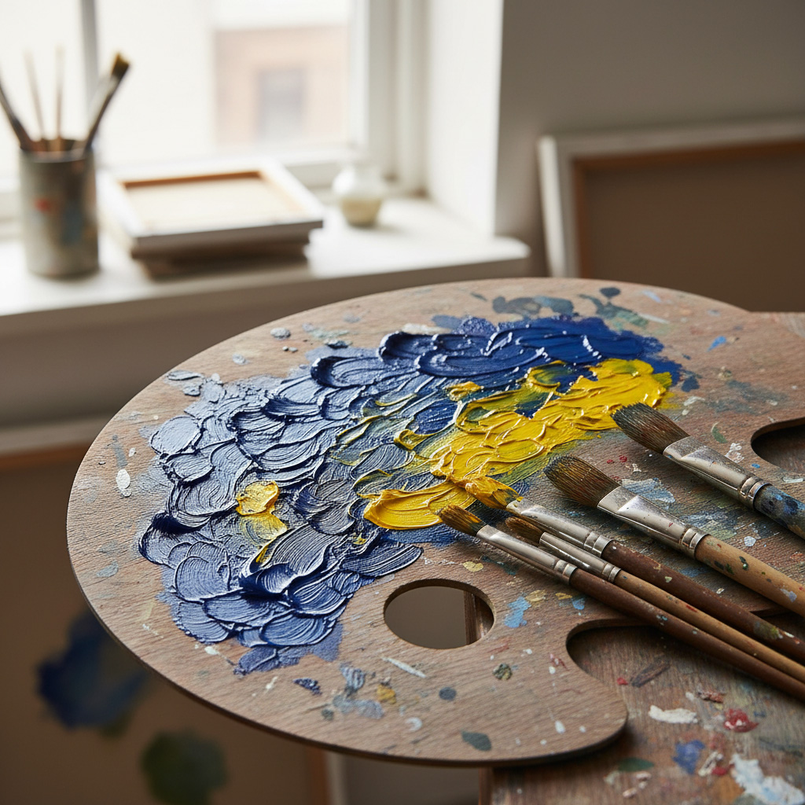
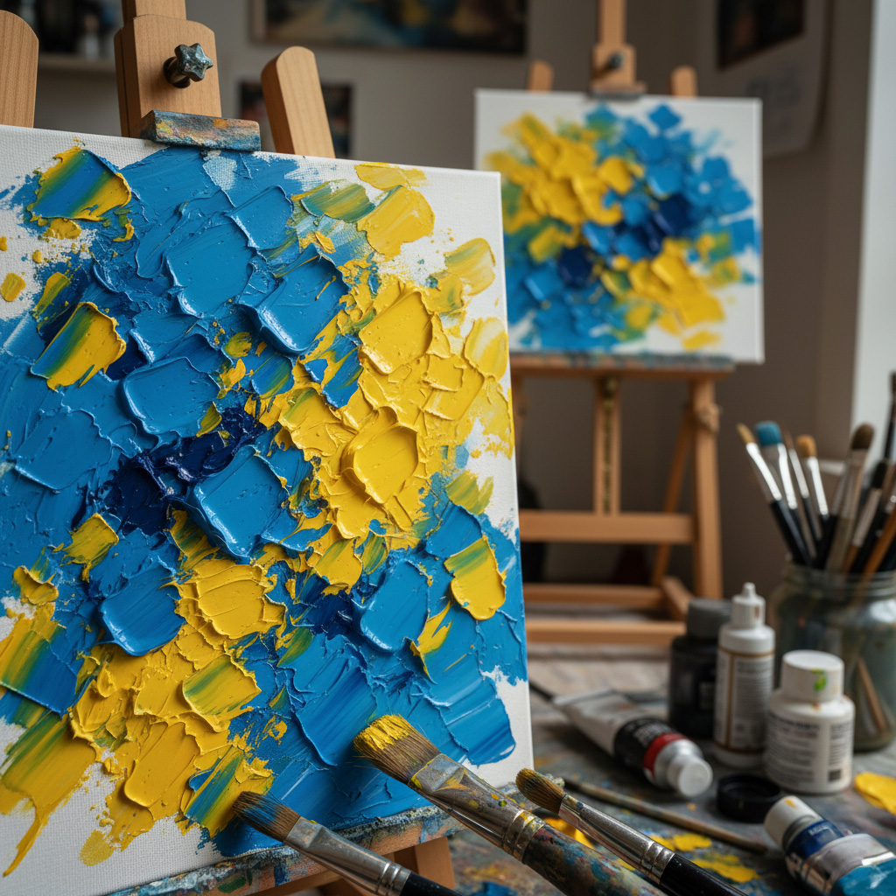
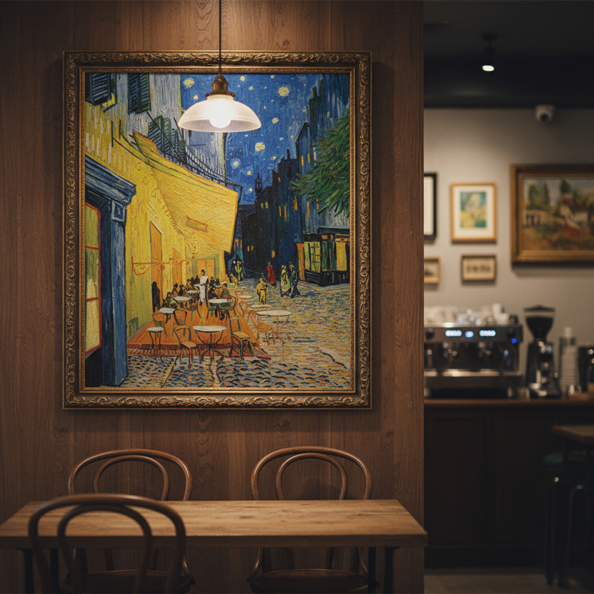

고흐의 철학
고통과 사랑

노란색과 파란색
노란색은 희망과 광기, 파란색은 영원과 고독을 상징했습니다. 이 두 색의 강렬한 대비는 고흐 작품의 핵심 감정을 시각화하는 역할을 합니다. 그는 색을 단순히 관찰하는 것이 아니라, 자신의 감정을 표현하는 수단으로 사용했습니다.

임파스토 기법
물감을 두껍게 덧칠하는 임파스토(Impasto) 기법을 사용했습니다. 이는 작품에 물리적인 질감을 부여하여 고흐의 붓 터치와 에너지, 그리고 작가의 격렬한 감정을 고스란히 전달합니다. 그의 붓 터치는 생동감과 움직임을 만듭니다.

후기 인상주의
당시 인상주의가 포착했던 평면적인 빛의 순간적인 인상에서 벗어나, 고흐는 색채와 형태로 개인의 감정과 내면 세계를 표현하는 새로운 길을 열었습니다. 이는 세잔, 고갱과 함께 후기 인상주의 시대를 열었습니다.
고흐의 예술은 인간에 대한 깊은 사랑과 동정심, 그리고 그가 겪었던 극심한 고통에서 비롯됩니다.
그는 그림을 통해 삶의 본질을 포착하고 고통받는 사람들을 위로하고자 했습니다.
그의 작품은 단순히 아름다운 풍경이 아닌,영혼의 절규와 희망의 메시지였습니다.